- Squash and stretch -
This is the first, and the most crucial of the 12 principles of animation. By distorting an asset's shape in response to an outside force, it gives a sense of weight, elasticity, and life to an otherwise rigid object.
Think of a bouncing rubber ball: as it falls, gravity stretches downwards. The moment is hits the ground, the momentum of the ball keeps going down, squashing it outward. The core rule of this principle is volume consistency.. No matter how much an object flattens, or elongates, its total volume must remain exactly the same so it doesn't look like it's changing size.
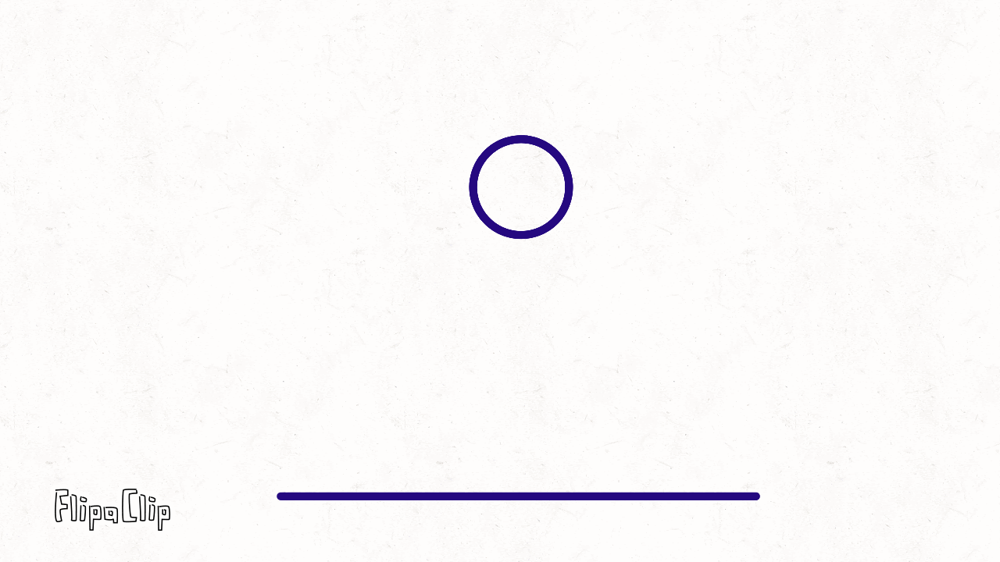
- Anticipation -
This is the second principle of animation. Anticipation is used to prepare an audience for a major action. It builds up momentum and signals exactly where to look before an action happens.
Think of character winding up for a massive pitch or throw: before launching forward, they pull their arms back, lean their entire torso away, and lift their leg high to store raw power. This wind-up acts like a compressed spring, giving the audience a clear signal/warning that a big action is about to release. Without the build-up, the action would feel weak and unrealistic, and too fast for the eye to catch.
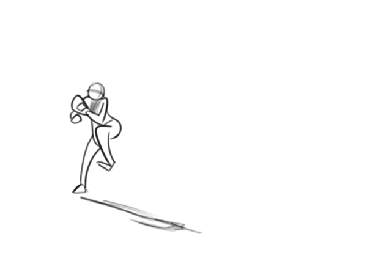
- Staging -
This is the third principle of animation. Staging is the art of directing the audience's attention to what is most important in a scene. It keeps the story clear and ensures that no key actions, expressions, or details get lost in the background noise.
Imagine theater stage with a spotlight: if every single actor is dancing and shouting at the exact same time, the audience won't know where to look and will miss the main storyline. Good staging fixes this by using clear camera angles, thoughtful character placement, and smart lighting to highlight the focus of the moment. Whether it's positioning a character perfectly in the center of the frame or keeping the background completely still while a single character gasps, the goal is to make the main idea completely unmistakable.
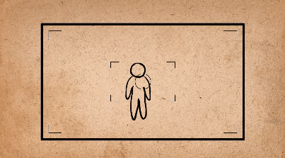
- Straight Ahead and Pose to Pose -
This is the fourth principle of animation. Straight Ahead and Pose-to-Pose represent the two distinct methods animators use to bring a sequence to life, each serving a completely different structural purpose.
Straight Ahead animation works best for unpredictable movements like fire, splashing water, or explosions. Animators draw each frame in sequence, which helps capture the natural, chaotic flow of the movement. Pose-to-Pose is better for planned actions, such as walking or sitting down. The animator draws the main keyframes first, then fills in the frames between them to make the movement smooth. Using both techniques helps create animations that feel natural while keeping the action clear and controlled.
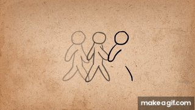
- Follow Through -
This is the fifth principle of animation. Follow Through and Overlapping Action ensure that characters obey the laws of physics, preventing their movements from stopping dead like a robotic block of wood.
Imagine a runner sprinting at full speed and suddenly stopping. Their body comes to a halt, but their hair, jacket strings, and clothes keep moving forward before slowly settling. This happens because different parts of the body react at different speeds. In animation, this is called Follow Through. It helps make movement look more realistic by showing how things like hair, tails, ears, and loose clothing keep moving even after the main body has stopped or changed direction.
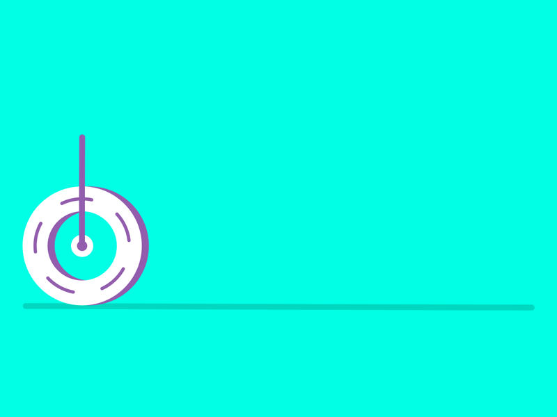
- Ease-in, Ease-out -
This is the sixth principle of animation. This principle adds realism to a movement by accelerating and decelerating elements organically, rather than keeping them at a single robotic speed.
A car starting from a complete stop provides a clear look at this mechanical physics principle in motion. It doesn't instantly blink to 60 miles per hour; it takes a moment to engine up, shifting through low speeds before hitting its maximum cruise velocity. The exact same behavior happens in reverse when hitting the brakes to ease smoothly into a parking spot. In animation, you achieve this fluid pacing by clustering extra transition drawings tightly around the starting and ending poses, while spacing out fewer drawings in the middle for the high-speed bursts.
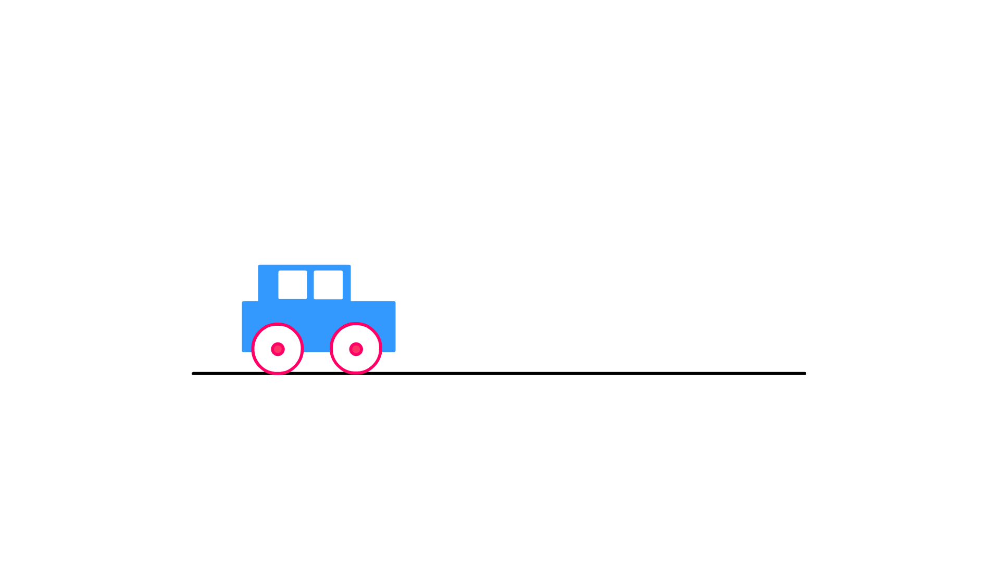
- Arcs -
This is the seventh principle of animation. This principle gives movements a natural, organic flow by ensuring that actions follow curved paths rather than stiff, unnatural straight lines.
Natural biological movement rarely travels in a rigid grid or a perfectly flat line. A person waving their hand, a creature swinging its tail, or an athlete throwing a ball all naturally trace a sweeping, circular path through space due to the pivot points of joints and limbs. Incorporating these sweeping curves into your frame transitions adds grace and realism to your characters. If a limb or a moving object accidentally cuts straight across from one keyframe to another, the motion instantly loses its organic weight and begins to look mechanical and robotic.
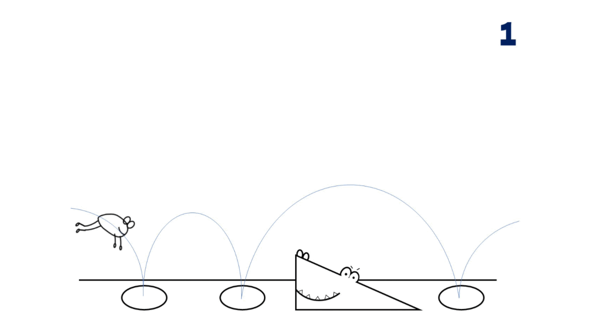
- Secondary Action -
This is the eighth principle of animation. Secondary Action adds layers of depth and personality to a scene by supporting the primary movement without distracting from it.
A person walking briskly down the street represents a great baseline for this concept: while their legs moving forward serve as the primary action, their hands whistling a tune, adjusting a scarf, or nervously checking a watch provide the subtle secondary details. These smaller gestures don't change the fact that the character is traveling from point A to point B, but they enrich the performance by revealing mood and internal thoughts. The key to mastering this principle is subtlety, ensuring these extra flourishes never overpower or pull focus away from the main storytelling moment.
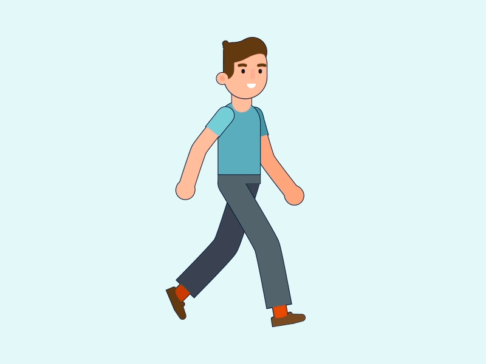
- Timing -
This is the ninth principle of animation. Timing controls the speed, weight, and emotional intent of an action by varying the total number of frames a specific movement takes from start to finish.
The number of frames used for a movement can change how it feels. For example, a character turning their head from left to right in just two frames makes the movement look sudden and sharp, like they've been startled by a loud noise. If the same movement takes thirty frames, it feels much slower and more relaxed, like someone waking up or looking around. Changing the timing helps show a character's emotions and makes their movements feel more natural.
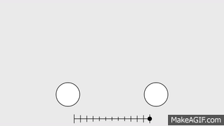
- Exaggeration -
This is the tenth principle of animation. Exaggeration pushes an animation past the boundaries of rigid reality to make a movement feel more impactful, dramatic, or distinctly expressive.
Copying real-life movements exactly can sometimes make animation look stiff or boring. To make actions more interesting, animators exaggerate certain movements, like stretching a scared character's face, lowering their body when running, or shaking the camera during a heavy impact. Exaggeration doesn't always mean making things look silly. It can also be used in realistic animation to make emotions and actions stand out. The key is to push the movement just enough to make it more powerful and easier for the audience to understand.
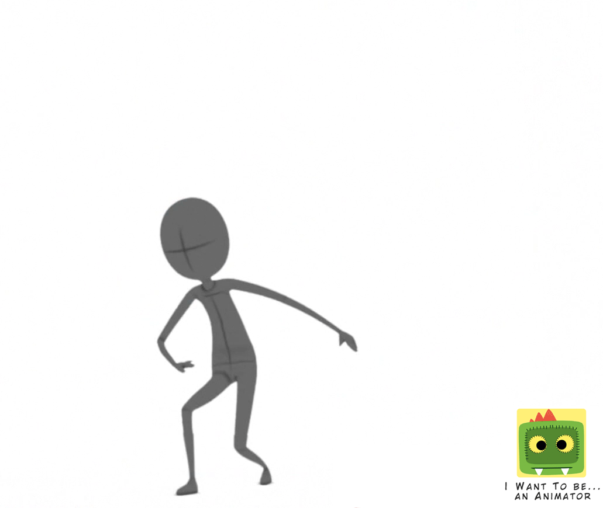
- Solid drawing -
This is the eleventh principle of animation. Solid Drawing gives characters and objects a believable sense of three-dimensional depth, volume, and weight on a flat two-dimensional screen.
To make a character look solid and realistic, artists need to understand basic 3D shapes like spheres, cubes, and cylinders. This helps them draw characters from different angles and show how the body moves in space. They also need to pay attention to things like shadows, curves, and perspective as the character turns or moves. Without this, the character might look flat or have strange proportions. Getting these basics right helps characters keep their shape and look consistent, even when they have a simple or cartoon style.
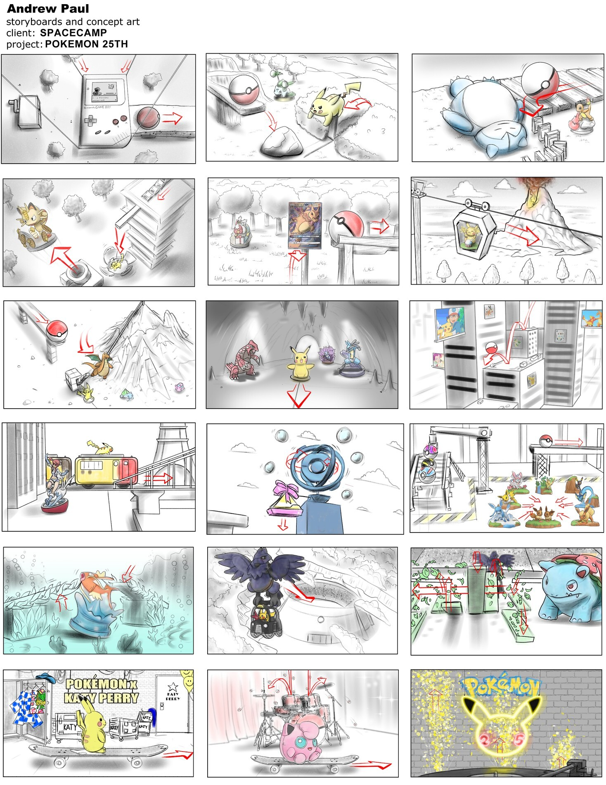
- Appeal -
This is the twelfth and final principle of animation. Appeal gives an animated character or object a captivating charisma and magnetic presence that instantly connects with the audience and holds their attention.
Appealing animation doesn't mean every character has to look pretty or perfect. Even a scary villain, a strange monster, or a broken robot can have a good design. Using clear shapes, expressive poses, and a mix of simple and detailed features helps make a character stand out. If the design is boring or hard to recognise, it can be difficult for the audience to connect with the character, even if the animation itself is smooth and realistic.
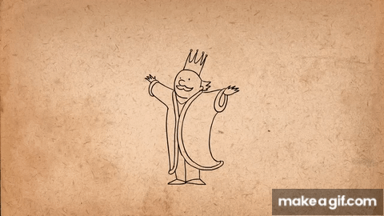